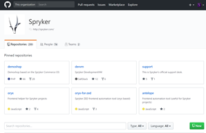
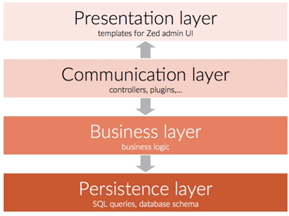

Understanding Spryker Commerce OS
Spryker is a Commerce Operating System that provides the end-to-end functionality needed to create a fully-functional commercial online presence for any entity in need of a modular, high-performing and scalable web presence.
Spryker Commerce OS stands out as an industry leader in Commerce solutions thanks to the adoption and development of strategically vital, architectural and production techniques.
Spryker is a Commerce Operating System that allows entities to connect and interact with customers via any channel, including: desktop shops, mobile apps, web services, social media, IoT, smart home devices and more.
Using a Commerce Operating System enables you to stay flexible and scale your technology when you need it.
We established our unique advantage by creating a commerce operating system that evolves around two fundamental cornerstones for success and they are:
- Modularity
- Separation
Growth, agility and adaptability are essential for maintaining a commercial offering that lives in an ever changing and fast paced environment. You want to be able to reach the market fast, grow where you need to and be ready for new buying trends and technologies.
The Spryker Commerce OS consists of around 300 modules and that number is growing all the time. A module is a part of the OS dedicated to a single concept and designed in such a way that it can interact and be used by other modules. Some modules are mandatory and required by the OS to run. The rest are optional and designed to provide certain functionality or connectivity to internal or external systems.
Our modularity has two dimensions. Not only do you need to take only the functionality that you want (ensuring you only deal with the parts you truly need to work with), we also develop, extend and release our functionality atomically (when a feature is tested and ready we publish it for use). This means that as a developer you start with a lean project where every piece of code contributes directly to your desired functionality, and nothing is redundant. Moreover, you can grow your project with the understanding that with every new feature you get with minimal to no baggage at all. On top of that, you never have to wait for a new feature or functionality. As mentioned, atomic means that as soon as a feature is tested and ready it is released for you to take.
Therefore, modularity allows you to be conservative during the initial stages where you want to focus on key functionalities in order to quickly achieve an MVP. Also gives you the confidence knowing that as technology evolves and new methods and ways to handle ecommerce transactions are introduced, you are using an OS that will grow with you.
Visit our code today:
|
The Spryker OS code is stored in github under the Spryker repository: https://github.com/spryker. Here you can find a complete list of all their modules, along with a description and a link to their relevant documentation. |
 |
The title separation is used to define the division between your commercial offering, and your sales channels. When you are able to create a clear separation between what you are selling and how you are selling it, you gain the freedom to offer your products in different methods and channels. When your commercial offering is hooked directly to an online web store, to expand to different channels and methods of selling is in most cases not a native expansion path. This results in investing time and money in innovative solutions, extensions and sometimes hacks in order to “make things work”. Whereas, when you commercial offering is not dependent on a single channel, all efforts automatically go towards growth and improvement.
Separation is established by using layers. We identified four different layers. The presentation layer that can be an online store, a mobile app, a Voice skill and anything else used to create a commercial transaction. The communication layer that connects the presentation to the business layer and passes information between the business layer and the different presentation layers you may have. The business layer includes your products, pricing, stock and general information surrounding your commercial offering. Finally, there is the persistence layer, this covers all the data storage and processing such as database queries and advanced calculations.

Creating this separation ensures that essential information is not tied-up with presentation information and you can easily swap-out, extend, replace and change the ways you present this information.
Another advantage of separation is performance. High performance is essential for a positive sales experience. A slow and clunky user experience is a sure way to make sure a customer will never return. The method we have adopted to ensure high performance is to confine long and resource heavy processes to the Business and persistence layers. We use controllers to communicate between the layers to ensure that only lean processes are executed on the presentation side. Basically, anything that can wait or will impact the sales process is offloaded to an area that will not impact performance.
Where to from here?
- If you would like to see our Shop App in action, check out our live demo, watch one of our feature videos of check out our feature list.
- If you are ready to get started with Spryker, visit our getting started page that will help guide you through building your business with Spryker Commerce OS.
- If you would like to check out past release visit our release notes section and archive.
- If you are not yet a Spryker Customer, enter your e-mail below to set up a meeting with one of our representatives:
To navigate through content, click on an option from the right-hand table of contents or use the search (above).
You can also use navigation buttons on the top right corner of page: 
-
 Navigate previous button takes you the page preceding the one you are currently on.
Navigate previous button takes you the page preceding the one you are currently on. -
 Navigate next button takes you to the page that goes next after the page you are currently on.
Navigate next button takes you to the page that goes next after the page you are currently on. -
 To improve readability, all long code samples and texts have been placed in collapsible areas. Use the Expand all button to expand and collapse long text and code samples or click on a single item to view.
To improve readability, all long code samples and texts have been placed in collapsible areas. Use the Expand all button to expand and collapse long text and code samples or click on a single item to view. -
 To print a page, click Print button.
To print a page, click Print button. -
 Use Edit on GitHub button to ask a question regarding the page content or request a change to it.
Use Edit on GitHub button to ask a question regarding the page content or request a change to it.